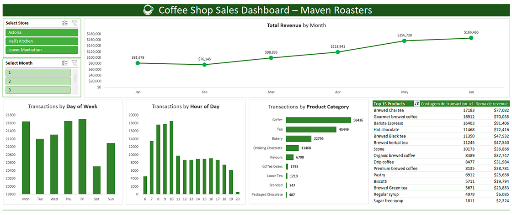

Este projeto teve como objetivo analisar as vendas da rede de cafeterias Maven Roasters, explorando tendências de receita, comportamento dos clientes e desempenho dos produtos. Para isso, foi criado um dashboard interativo em Excel, permitindo a visualização dinâmica dos dados e extração de insights estratégicos para o negócio.

Para estruturar a análise e construir o dashboard, segui as seguintes etapas:
1 - Análise Exploratória de Dados (EDA)